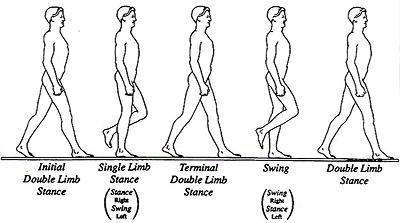
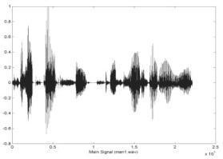
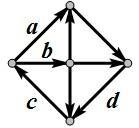

一、单选题(共20题，每题1.5分，共计30分；每题有且仅有一个正确选项)
| 1. | 在二进制下，1101001 + （ ） = 1110110。 |
|---|
| 2. | 字符“0”的 ASCII 码为 48，则字符“9”的 ASCII 码为（ ）。 |
|---|
| 3. | 一片容量为 8GB 的 SD 卡能存储大约（ ）张大小为 2MB 的数码照片。 |
|---|
| 4. | 摩尔定律（Moore's law）是由英特尔创始人之一戈登·摩尔（Gordon Moore）提出来的。根据摩尔定律，在过去几十年以及在可预测的未来几年，单块集成电路的集成度大约每（ ）个月翻一番。 |
|---|
| 5. | 无向完全图是图中每对顶点之间都恰有一条边的简单图。已知无向完全图 G 有 7 个顶点，则它共有（ ）条边。 |
|---|
| 6. | 寄存器是（ ）的重要组成部分。 |
|---|
| 7. | 如果根结点的深度记为 1，则一棵恰有 2011 个叶结点的二叉树的深度最少是（ ）。 |
|---|
| 8. | 体育课的铃声响了，同学们都陆续地奔向操场，按老师的要求从高到矮站成一排。每个同学按顺序来到操场时，都从排尾走向排头，找到第一个比自己高的同学，并站在他的后面。这种站队的方法类似于（ ）算法。 |
|---|
| 9. | 一个正整数在二进制下有 100 位，则它在十六进制下有（ ）位。 |
|---|
| 10. | 有人认为，在个人电脑送修前，将文件放入回收站中就是已经将其删除了。这种想法是（ ）。 |
|---|
| 11. | 广度优先搜索时，需要用到的数据结构是（ ）。 |
|---|
| 12. | 在使用高级语言编写程序时，一般提到的"空间复杂度"中的"空间"是指（ ）。 |
|---|
| 13. | 在含有 n 个元素的双向链表中查询是否存在关键字为 k 的元素，最坏情况下运行的时间复杂度是（ ）。。 |
|---|
| 14. | 生物特征识别，是利用人体本身的生物特征进行身份认证的一种技术。目前，指纹识别、虹膜识别、人脸识别等技术已广泛应用于政府、银行、安全防卫等领域。以下不属于生物特征识别技术及其应用的是（ ）。 |
|---|
|
|
 |
|
 |
| 15. | 现有一段文言文，要通过二进制哈夫曼编码进行压缩。简单起见，假设这段文言文只由 4 个汉字"之"、"乎"、"者"、"也"组成，它们出现的次数分别为 700、600、300、 200。那么，"也"字的编码长度是（ ）。 |
|---|
| 16. | 关于汇编语言，下列说法错误的是（ ）。 |
|---|
| 17. | （ ）是一种选优搜索法，按选优条件向前搜索，以达到目标。当探索到某一步时，发现原先选择并不优或达不到目标，就退回一步重新选择。 |
|---|
| 18. | 1956 年（ ）授予肖克利（William Shockley）、巴丁（John Bardeen）和布拉顿（Walter Brattain），以表彰他们对半导体的研究和晶体管效应的发现。 |
|---|
| 19. | 对一个有向图而言，如果每个节点都存在到达其他任何节点的路径，那么就称它是强连通的。例如，右图就是一个强连通图。事实上，在删掉边（ ）后，它依然是强连通的。 |  |
|---|
| 20. | 从 ENIAC 到当前最先进的计算机，冯·诺依曼体系结构始终占有重要的地位。冯·诺依曼体系结构的核心内容是（ ）。 |
|---|
二、问题求解(共2题，每题5分，共计10分)
| 1. | 每份考卷都有一个 8 位二进制序列号。当且仅当一个序列号含有偶数个 1 时，它才是有效的。 例如，00000000、01010011 都是有效的序列号，而 11111110 不是。 那么，有效的序列号共有 个。 |
|---|
| 2. | 定义字符串的基本操作为：删除一个字符、插入一个字符和将一个字符修改成另一个字符这三种操作。 将字符串 A变成字符串 B的最少操作步数，称为字符串 A到字符串 B的编辑距离。 字符串"ABCDEFG"到字符串"BADECG"的编辑距离为 。 |
|---|
三、阅读程序写结果(共4题，每题8分，共计32分)
| 1. |
#include <iostream>
using namespace std;
int main(){
int i, n, m, ans;
cin >> n >> m;
i = n;
ans = 0;
while(i <= m)
{
ans += i;
i++;
}
cout << ans << endl;
return 0;
}
|
|---|---|
| 输入：10 20 | |
| 输出： |
| 2. |
#include <iostream>
#include <string>
using namespace std;
int main()
{
string map = "22233344455566677778889999";
string tel;
int i;
cin >> tel;
for(i = 0; i < tel.length(); i++)
if((tel[i] >= '0') &&" (tel[i] <= '9'))
cout << tel[i];
else if((tel[i] >= 'A') && (tel[i] <= 'Z'))
cout << map[tel[i] - 'A'];
cout << endl;
return 0;
}
|
|---|---|
| 输入：CCF-NOIP-2011 | |
| 输出： |
| 3. |
#include <iostream>
#include <cstring>
using namespace std;
const int SIZE = 100;
int main()
{
int n, i, sum, x, a[SIZE];
cin >> n;
memset(a, 0, sizeof(a));
for(i = 1; i <= n; i++)
{
cin >> x;
a[x]++;
}
i = 0;
sum = 0;
while(sum < (n / 2 + 1))
{
i++;
sum += a[i];
}
cout << i << endl;
return 0;
}
|
|---|---|
| 输入：11 | |
| 4 5 6 6 4 3 3 2 3 2 1 | |
| 输出： |
| 4. |
#include <iostream>
using namespace std;
int solve(int n, int m){
int i, sum;
if (m == 1)
return 1;
sum = 0;
for (i = 1; i < n; i++)
sum += solve(i, m - 1);
return sum;
}
int main(){
int n, m;
cin>>n>>m;
cout<<solve(n, m)<<endl;
return 0;
}
|
|---|---|
| 输入：7 4 | |
| 输出： |
四、完善程序(共2题，每题14分，共计28分)
| 1. | （子矩阵）输入一个n1*m1的矩阵a，和n2*m2的矩阵b，问a中是否存在子矩阵和b相等。若存在，输出所有子矩阵左上角的坐标；若不存在输出“There is no answer”。 |
|---|
#include <iostream>
using namespace std;
const int SIZE = 50;
int n1, m1, n2, m2, a[SIZE][SIZE], b[SIZE][SIZE];
int main()
{
int i, j, k1, k2;
bool good, haveAns;
cin >> n1 >> m1;
for(i = 1; i <= n1; i++)
for(j = 1; j <= m1; j++)
cin >> a[i][j];
cin >> n2 >> m2;
for(i = 1; i <= n2; i++)
for(j = 1; j <= m2; j++)
;
haveAns = false;
for(i = 1; i <= n1 - n2 + 1; i++)
for(j = 1; j <= ; j++)
{
;
for(k1 = 1; k1 <= n2; k1++)
for(k2 = 1; k2 <= ; k2++)
{
if(a[i + k1 - 1][j + k2 - 1] != b[k1][k2])
good = false;
}
if(good)
{
cout << i << ' ' << j << endl;
;
}
}
if(!haveAns)
cout << "There is no answer" << endl;
return 0;
}
|
| 2. | （大整数开方）输入一个正整数n（1≤n＜10100），试用二分法计算它的平方根的整数部分。 |
|---|
#include <iostream>
#include <cstring>
using namespace std;
const int SIZE = 200;
struct hugeint{
int len, num[SIZE];
};
//其中 len 表示大整数的位数；num[1]表示个位、num[2]表示十位，以此类推
hugeint times(hugeint a, hugeint b)
//计算大整数 a 和 b 的乘积
{
int i, j;
hugeint ans;
memset(ans.num, 0, sizeof(ans.num));
for(i = 1; i <= a.len; i++)
for(j = 1; j <= b.len; j++)
+= a.num[i] * b.num[j];
for(i = 1; i <= a.len + b.len; i++)
{
ans.num[i + 1] += ans.num[i] / 10;
;
}
if(ans.num[a.len + b.len] > 0)
ans.len = a.len + b.len;
else
ans.len = a.len + b.len - 1;
return ans;
}
hugeint add(hugeint a, hugeint b)
//计算大整数 a 和 b 的和
{
int i;
hugeint ans;
memset(ans.num, 0, sizeof(ans.num));
if(a.len > b.len)
ans.len = a.len;
else
ans.len = b.len;
for(i = 1; i <= ans.len; i++)
{
ans.num[i] += ;
ans.num[i + 1] += ans.num[i] / 10;
ans.num[i] %= 10;
}
if(ans.num[ans.len + 1] > 0)
ans.len++;
return ans;
}
hugeint average(hugeint a, hugeint b)
//计算大整数 a 和 b 的平均数的整数部分
{
int i;
hugeint ans;
ans = add(a, b);
for(i = ans.len; i >= 2; i--)
{
ans.num[i - 1] += () * 10;
ans.num[i] /= 2;
}
ans.num[1] /= 2;
if(ans.num[ans.len] == 0)
ans.len--;
return ans;
}
hugeint plustwo(hugeint a)
//计算大整数 a 加 2 后的结果
{
int i;
hugeint ans;
ans = a;
ans.num[1] += 2;
i = 1;
while((i <= ans.len) && (ans.num[i] >= 10))
{
ans.num[i + 1] += ans.num[i] / 10;
ans.num[i] %= 10;
i++;
}
if(ans.num[ans.len + 1] > 0)
;
return ans;
}
bool over(hugeint a, hugeint b)
//若大整数 a>b 则返回 true，否则返回 false
{
int i;
if()
return false;
if(a.len > b.len)
return true;
for(i = a.len; i >= 1; i--)
{
if(a.num[i] < b.num[i])
return false;
if(a.num[i] > b.num[i])
return true;
}
return false;
}
int main()
{
string s;
int i;
hugeint target, left, middle, right;
cin >> s;
memset(target.num, 0, sizeof(target.num));
target.len = s.length();
for(i = 1; i <= target.len; i++)
target.num[i] = s[target.len - i] - ;
memset(left.num, 0, sizeof(left.num));
left.len = 1;
left.num[1] = 1;
right = target;
do
{
middle = average(left, right);
if(over())
right = middle;
else
left = middle;
} while(!over(plustwo(left), right));
for(i = left.len; i >= 1; i--)
cout << left.num[i];
cout << endl;
return 0;
}
|